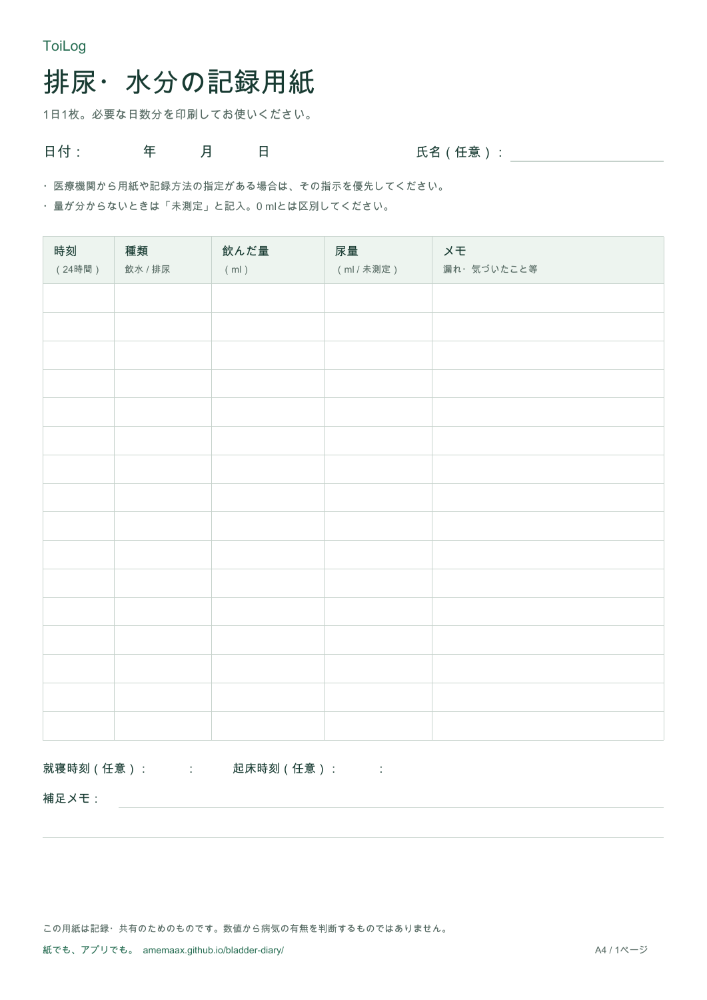

排尿日誌の書き方と無料PDF
トイレと水分の記録を、
相談しやすい一枚に。
「いつ、どれくらいだったか」を思い出す負担を軽く。
紙に書くところから、アプリでまとめるところまで。
A4・1日1枚 ／ 登録不要 ／ このページからのダウンロードは無料
アプリで記録する方法を見る
紙でも、アプリでも。まずは残せるところから。
HOW TO RECORD
書くことは、
時刻・種類・量。
医療機関から記録方法や期間の指定がある場合は、その指示に合わせてください。
- 01
飲んだとき、トイレに行ったときの時刻
「19:30」のように時刻を書き、「飲水」「排尿」の種類を分けて記録します。
- 02
分かる量はmlで。分からなければ未測定
飲んだ量と尿量は別の欄へ。測っていない量を0 mlとして記入しないようにします。
- 03
伝えたいことは短いメモで
飲み物の種類、漏れ、気づいたことなど。書ききれない日は、もう1枚使えます。
こんなふうに記録できます
架空の記入例| 時刻 | 種類 | 飲んだ量 | 尿量 | メモ |
|---|---|---|---|---|
| 09:00 | 飲水 | 150 ml | — | 水 |
| 10:30 | 排尿 | — | 未測定 | — |
| 12:15 | 排尿 | — | 200 ml | — |
「—」はその行では記録対象外の欄です。記入例は健康状態の目安や推奨量を示すものではありません。
FREE PRINTABLE
まずは紙で、始めたい方へ。
A4の記録用紙を必要な日数分、印刷して使えます。
氏名、就寝・起床時刻、補足メモの欄は任意です。
PDF・1ページ。メールアドレスの登録は不要です。
KEEP IT WITH YOU
手元で記録。
必要なときに見返す。
ToiLogなら、手元のiPhoneでトイレと水分を記録。履歴を見返し、ProでPDFにまとめられます。
- 無料 トイレ・水分の記録
- 日々の記録を残し、履歴や基本的なグラフで確認。
- Pro PDFレポートの出力
- 記録を読みやすくまとめ、印刷や共有に使えます。
無料版には広告があります。Proの料金と利用条件は、アプリ内の購入画面でご確認ください。
QUESTIONS
始める前に。
何日分、記録すればよいですか？
通院のための記録は、医療機関が指定した期間に合わせてください。この用紙は1日1枚で、必要な枚数を印刷できます。
量が分からなくても書けますか？
はい。時刻と種類を残し、測っていない量は「未測定」と書けます。医療機関から測定の指示がある場合は、その方法に従ってください。
紙の用紙と、アプリのPDF出力はどちらも無料ですか？
このページの空欄の記録用紙は無料です。ToiLogの記録・履歴確認は無料で、アプリ内の記録をまとめたPDFの出力はProの機能です。
記録の取り扱いはどこで確認できますか？
このページのダウンロードに氏名やメールアドレスは不要です。アプリでの記録の保存・同期・AI機能への送信については、プライバシーポリシーをご確認ください。
ToiLogとこの用紙は記録・共有のための道具です。数値から病気の有無を判断したり、診断・治療を行ったりするものではありません。